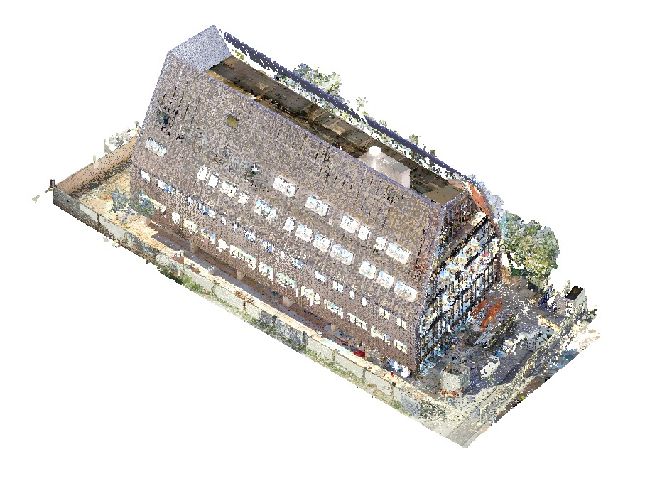
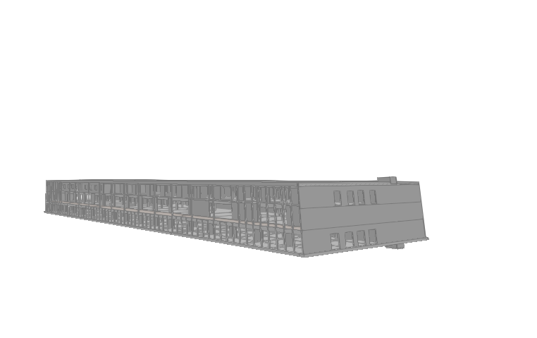

02 / Sélection
Projets récents

Projet personnel
Tiny House
Conception BIM, plans, modélisation 3D et construction.

Projet professionnel
Projet Pro 1 — Anonymisé
Réseaux fluides et CVC à partir d’un nuage de points.

Projet professionnel
Projet Pro 2 — Anonymisé
Structure en béton armé : fondations, voiles et planchers.